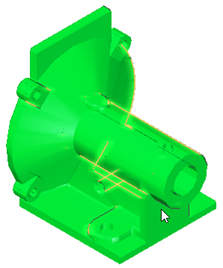
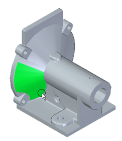
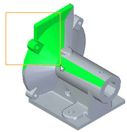
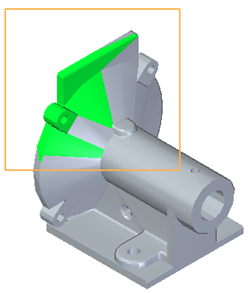

Smooth Mesh command
Smoothing a mesh is part of the Reverse Engineering Workflow.
Smooth Mesh command
Use the Smooth Mesh command to reduce the amount of imperfections that are created when the source part was initially scanned. The size and amount of imperfections can adversely affect the quality of the extracted surfaces.
The area of the mesh to be smoothed is identified by changing mesh regions to green.
After identifying the regions to be smoothed, identify the acceptable Smoothing Factor and the number of Iterations to perform. Then select Accept  to smooth the identified mesh facets.
to smooth the identified mesh facets.
The Smooth Mesh command bar has the following options:
- Mesh Selection
-
- Body/Face
-
The Body/Face method selects bodies or faces to delete.

- Brush
-
The Brush method paints the area to be deleted. Highlighted mesh regions turn green when selected. This method is useful when selecting mesh facets in a small irregular area.

- Fence
-
The Fence method defines a selection box (rectangle by 2 points) that identifies the area to be deleted. The current view orientation determines the perspective of the selection box. Highlighted mesh regions turn green when selected.

- Box
-
The Box method defines a 3D selection box with a finite depth that identifies the area to be deleted.

- Accept
-
Select this option to delete all mesh facets that are highlighted in green. You can also right-click or press Enter to accept the selections.
- Deselect all

-
Select this option or press Esc to deselect all selected mesh facets.
Next steps
How do I
Create a sketch from a section curveLearn more
Reverse Engineering workflowReverse engineering example
Look up more details
Delete Mesh commandFill Holes command
Align command
Align command bar
Remesh command
Remesh Options dialog box
Automatic regions command
Manual regions command
Extract surfaces command
Fit surfaces command
Deviation Analysis command
Deviation Analysis command bar
Deviation Analysis Settings dialog box
Section Sketches command
Section Sketches command bar
Section Sketches Options dialog box
Related Topics
Align a mesh body to a coordinate systemAnalyze the deviation between two objects